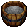

１．Dye Tab（染め桶）の種類
| Tabの種類 | 入手方法 | 対象となるアイテム |
|  Dying Tab |
店売り | 布、布から作られた衣類、皮製を含む靴類、Metal kite shield（鍛冶） |
 Dying Tab (Black) |
長期報酬 1年以上 |
|
Special Dye Tab |
長期報酬 1年以上 |
|
Leather Dye Tab |
長期報酬 2年以上 |
皮製装備品 |
Furniture Dye Tab |
長期報酬 1年以上 |
大工スキルで作成可能な家具類 |
Runebook Dye Tab |
長期報酬 4年以上 |
Runebook、Recall Rune |
Reward Statue Dye Tab |
長期報酬 5年以上 |
長期報酬で入手可能なStatue |
２．染色について
染料（Dyes） を染め桶に使用すると、その種類により下のような色選択画面が表示されます。
を染め桶に使用すると、その種類により下のような色選択画面が表示されます。
（染料をダブルクリックし、ターゲットを染め桶に合わせる）
染料は裁縫屋で安価に入手することができ、染料1つにつき25回だけ色を変えることができます。
１）Dying Tab、Furniture Dye Tab
Brightness下のバーを左右に動かすことで、上に表示された色の明るさを変えることができます。一度染料を入れた桶は、無色（脱色用）にすることができなくなります。Furniture Dye Tabで染めた家具を元の色に戻すには、 染料を入れていないFurniture Dye Tabを用意しなければなりません。

２）Special Dye Tab
普通の染め桶では出せない色から染める色を選択することができます。３）Leather Dye Tab、Runebook Dye Tab、Reward Statue Dye Tab
２）とは色は異なりますが、染める色を選択することができます。さらに、下の「Default」ボタンを押すことで、染料を入れていない状態に戻すことができます。
４）Black Dye Tab
この染め桶だけは、染料を入れることができないようになっています。